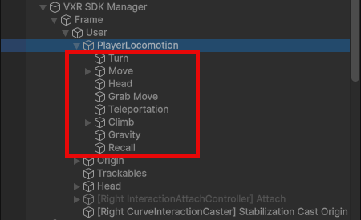
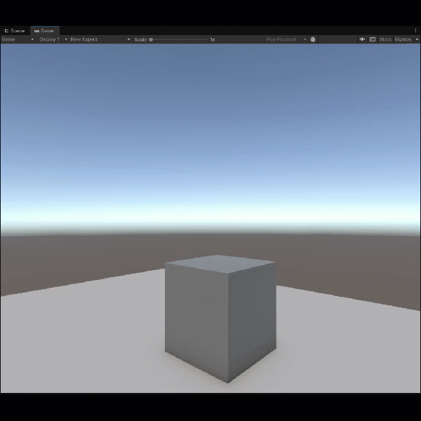

Default locomotion providers
VotanicXR2 provides a set of built-in locomotion tools to help user navigate in the virtual world. Each player have a set of locomotion provider components (from Unity XR Interaction Toolkit) attached to them that allow them to move in different ways.
The player in VotanicXR2 by default has a list of interactors attached to it. For the related controls, refer to default input mappings.

Locomotion providers
| Locomotion provider | Description |
|---|---|
| Turn | XRI locomotion provider that handles user rotation. Modified to disable the 180-degree XRI snap turn. |
| Move | XRI locomotion provider that handles user movement. Modified to determine the forward direction based on which hand (left or right) is currently available. |
| Head | Provided by VXR2 framework. |
| Recall | Provided by VXR2 framework. |
| Teleport | Provided by VXR2 framework. |
| Gravity | XRI locomotion provider that handles user gravity. |
| Grab | XRI locomotion provider that allows the user to move with one hand as if grabbing the whole world around them. |
Tip
Customize locomotion button mappings in the Action Map Editor.
Gravity locomotion special behavior when flying
VotanicXR2 provides a flying action for user to vertically move up and down along the scene. To allow fly action to run smoothly for users, VotanicXR2 SDK modifies the gravity locomotion provider in runtime. The modification leads to four movement mode and some special behavior on how the gravity locomotion provider act when you run your scene, as summarized by the table below:
Specifically, the user gravity is temporarily disabled when the user is flying with gravity on.

| User Gravity | |||
|---|---|---|---|
| User Gravity ON | User Gravity OFF | ||
| Fly | When Flying | Does not fall until stop flying (User gravity disabled when flying) |
Free flying |
| When Not Flying | Normal walking, does fall | Normal walking, does not fall | |